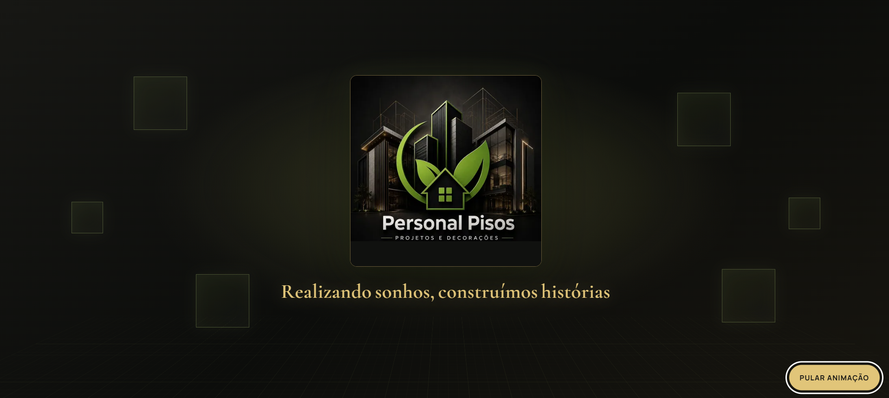
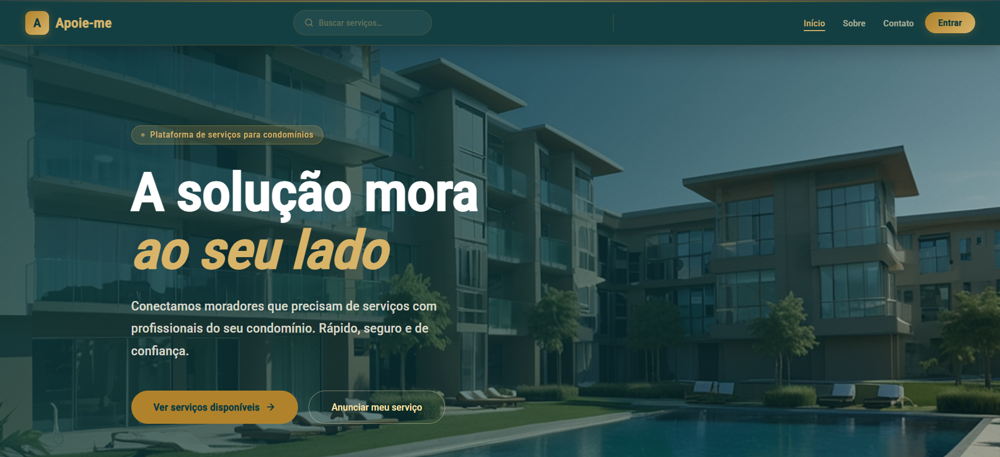
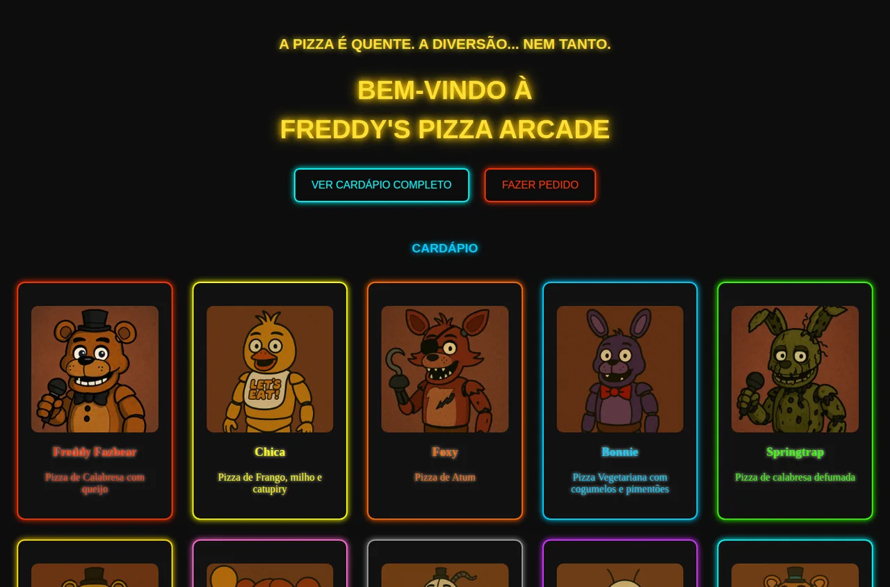

SITE INSTITUCIONAL · CATÁLOGO
Personal Pisos
Site para apresentar a empresa, seus revestimentos e serviços. Reúne páginas de produtos, contato e solicitação de orçamento.
Desenvolvedora front-end em formação
Sou Julia Lafaelly. Crio páginas e experiências digitais com curiosidade, cuidado visual e códigos que funcionam.

01 Um pouco sobre mim
Sou desenvolvedora front-end e estudante de Engenharia de Software em São Paulo.
Minha prática acontece construindo: páginas responsivas, interações para o navegador e projetos que conectam aprendizado com uso real. Aqui, cada projeto conta uma parte dessa jornada.
Conectar no LinkedInFormação (concluída)
Etec de Itaquera I
Formação (em andamento)
Universidade Cidade de São Paulo · UNICID
02 Ferramentas & repertório
Tecnologias e ferramentas que utilizo para desenvolver interfaces, explorar soluções back-end, trabalhar com bancos de dados e criar projetos.
03 Feito por mim

SITE INSTITUCIONAL · CATÁLOGO
Site para apresentar a empresa, seus revestimentos e serviços. Reúne páginas de produtos, contato e solicitação de orçamento.

ANDROID · WEB · SERVIÇOS
Plataforma de serviços para facilitar a divulgação e a consulta de oportunidades entre usuários. O projeto conta com um aplicativo Android e uma versão web para ampliar o acesso à plataforma.

SITE TEMÁTICO · CARDÁPIO
Site temático com cardápio de dez pizzas, páginas de detalhes e formulário visual de pedido. O formulário é demonstrativo e não envia pedidos.
04 Próximo passo
Estou aberta a conversas sobre tecnologia, projetos e novas oportunidades.